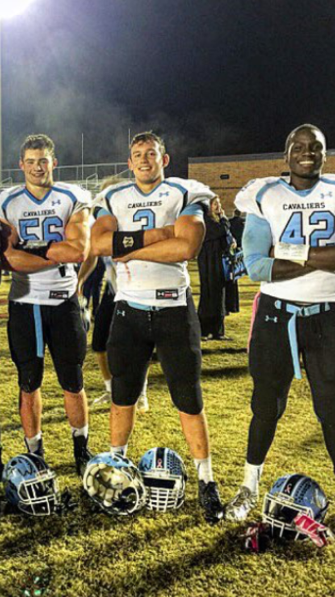
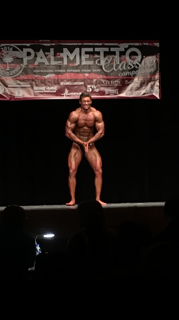
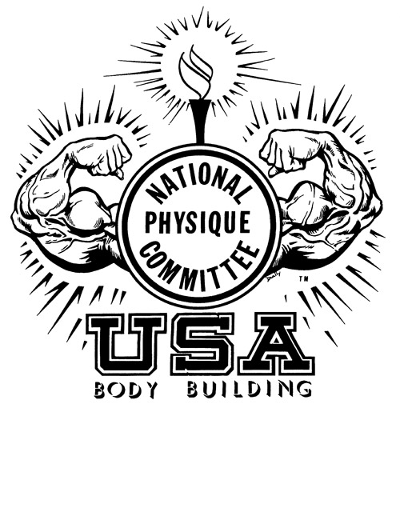
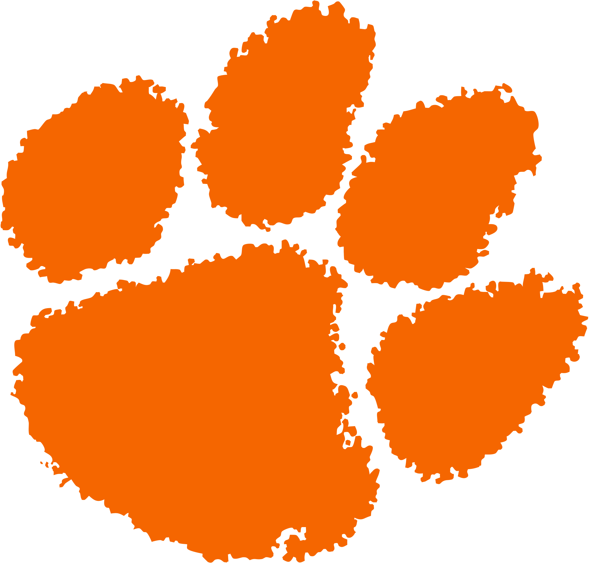

 I was born in Greenville, South Carolina on September 10, 1998. I have lived in Greenville since I was born and to this day have never moved. I started playing football in 3rd grade, and played until August leading up to my senior year, when I decided I wanted to pursue bodybuilding and did not want to risk the high chance of injury in football. JL Mann is the third school I have attended, I began my education at Stone Academy, then Beck Academy for middle school, and finally I went to Christ Church from freshman to junior year of highschool before transferring to JL Mann.
I am currently a senior at JL Mann and have just turned 18. I work as a personal trainer at Brits Brother's Gym in my spare time, I work there four days a week. I spend most of my time now either working out, or cooking and eating many of the meals necessary for bodybuilding. I still live at home with my parents, my two american bull dogs Caine and Titus, and my 20 year old brother who works as an EMT. My favorite part of my life right now is getting out of school at 12:35. 
My mom, Shannon, attended Clemson University where she graduated with high honors for a nursing degree. She had worked as a nurse for over ten years when she had an idea of a new technology to document health care. After years of work she got a patent and now her company is funded and excited for the future. My dad competed in bodybuilding after hurting his knee in highschool and being unable to play football in college, he won the title of Mr. South Carolina. He now owns his own personal training gym and still works as a trainer there.
After Highschool I plan on going to college to major in Echocardiography, in which you take ultrasounds of peoples hearts. Hopefully I will attend Clemson Univeristy to receive this degree, however it is probable I will not get accepted so I might attend Greenville Tech for a year or two and then Transfer to Clemson. I also applied to and am considering The University of Colorado at Colorado Springs, mainly due to this school also offering the degree I am planning on. I will most likely work as a personal trainer throughout college, if I attend Greenville Tech then I will continue my job at Brit's Brother's Gym. If I go to clemson then i will have to find a job there.
{kind=link}
{kind=link}
{kind=link}